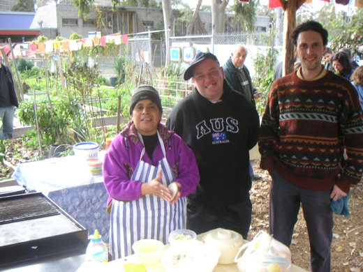

<--Previous Up Next-->

And the amazing Vilma of El Salvador - a key Buncle St gardener and lukily, given our Vilma couldn't come, a dab hand at them pupusas - with something like 100 pupusas being made on the day and everyone getting to try some.